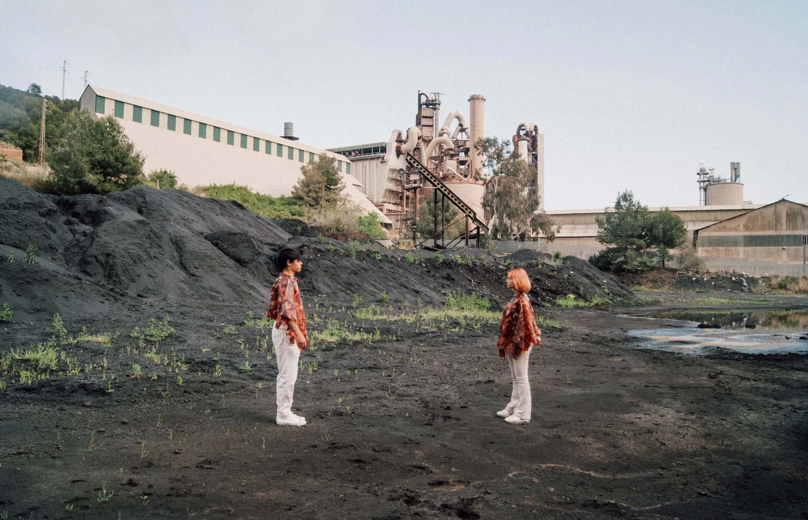
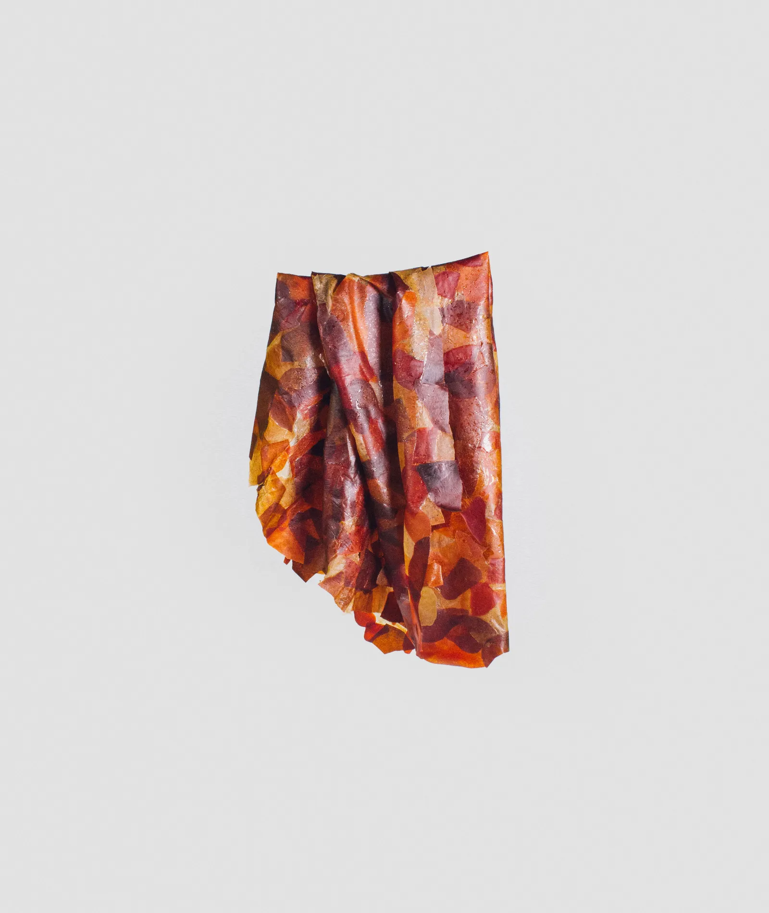

SK-016
5
SK-016 es un proyecto en el que se exploran nuevas tendencias y materiales para una moda sostenible.
Fue parte de la exposición "Imaginar els Possibles" del DHub Barcelona, 2022-2023.
El consumo masivo hace que la industria de la moda sea la segunda más contaminante y demandante de agua del mundo. Además de generar alrededor del 20% de las aguas residuales del planeta, el 73% de los textiles acaban incinerados o en vertederos.
"SK-016" imagina una nueva forma de confeccionar prendas, mediante una futura tendencia de moda DIY, utilizando un material fácil de degradar, fácil de fabricar y 100% vegetal, permitiendo un sinfín de patrones que juegan con las tonalidades y las transparencias. Al aplicar calor para unir los fragmentos, creamos nuestra segunda piel.

